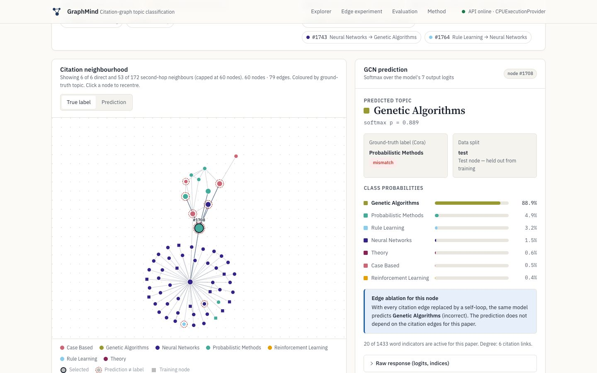

Graph neural networks · node classification
GraphMind: topic classification on the Cora citation graph
A two-layer graph convolutional network labels 2,708 papers with one of seven topics, using each paper's word features and its citation links. The model runs in ONNX Runtime behind FastAPI.
- Test accuracy
- 0.792 re-evaluated
- Test macro-F1
- 0.782 re-evaluated
- Edges removed
- 0.678 re-evaluated
- Random-forest baseline
- 0.581 notebook
What was added and what the results show
- Interactive 1- and 2-hop citation-neighbourhood graph, built from the real Cora edges.
- Edge-ablation experiment: the same model with every citation replaced by a self-loop drops from 0.792 to 0.678 accuracy, which quantifies what message passing adds.
- Live evaluation of the exported model: confusion matrix and per-class metrics.
- Limitations noted: one training run with no seed variance; the exported weights are from the final epoch rather than the best one (because of how the notebook saved its checkpoint); training accuracy is 1.000 (overfitting); the setting is transductive.
PyTorch Geometric · ONNX Runtime · FastAPI · vanilla JS / SVG
Live demoWatch demo (1 min)CodeFree hosting: the first visit can take about a minute to wake the server